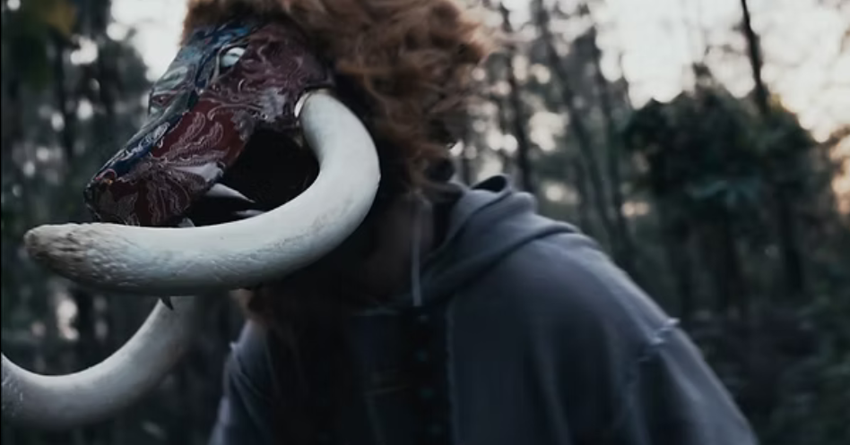
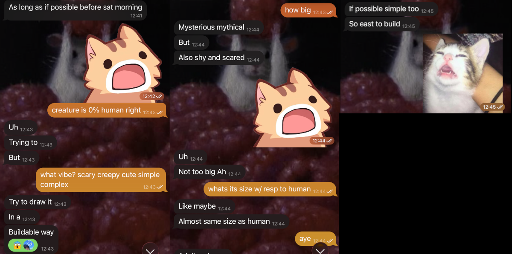
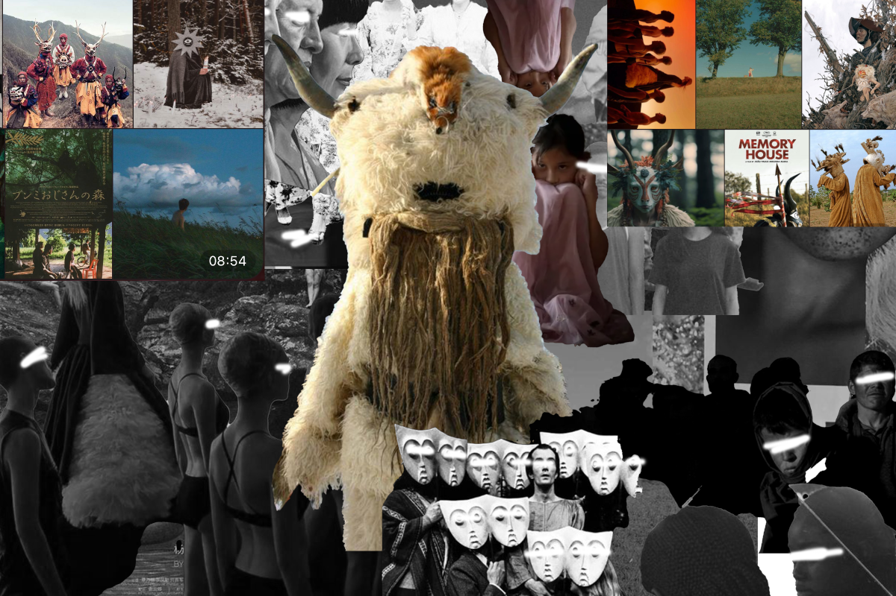
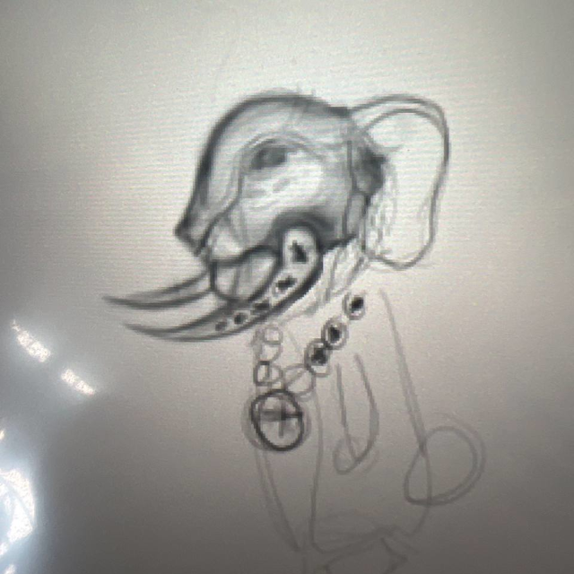
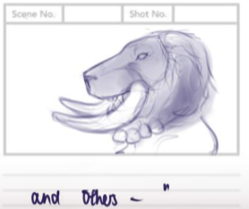
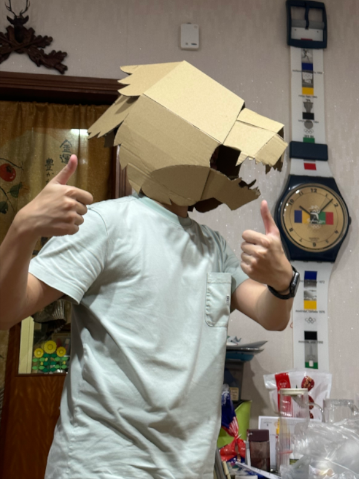
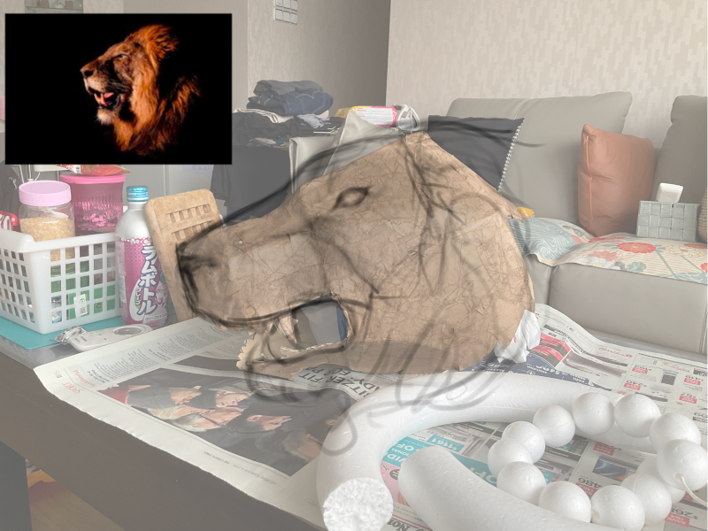
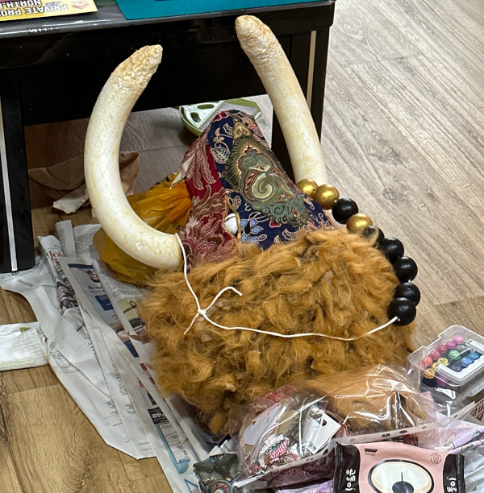

The boy sits down to write a poem — Costume Design
16 November 2023

> Origins
My partner was planning to make a short film and wanted a beast in it. A creature that drew from Singapore's multicultural identity and brought it into one body. His plan was to build it out of paper mache, and he asked if I wanted to design and make it. I said yes, along with many cat stickers.

...How does something be mysterious, shy, mythical and simple all at once?
My role was to design the creature and fabricate the head. This is how it went.
> What is "Regardless"?
"Regardless (The boy sits down to write a poem)" is a poem by Yeo Ken Hui, Ryan. From what I gather, it reflects on race and identity in Singapore: the idea that beneath our different backgrounds, there's a shared humanity holding everyone together. The beast is the centrepiece of the film — a single creature that weaves Singapore's cultural identities into one body.
> Designing the Beast
Here's the design problem: distinct cultural visual languages have to share one creature without any of them dominating or looking like an afterthought. It has to feel at ease in its own existence — like there was never any other way it could have looked.
>> Mood Board
The partner handed me some mood boards to help get my brain juices flowing.

>> First Draft
I knew the base should be a lion's head, the symbol of Singapore that could anchor everything else. Starting from the lion gave the head its proportions and a sense of place — it's specifically a Singaporean beast, not just a generic fantasy creature. Everything else had to fit around it without fighting it.

The first draft had elephant ears, but they overwhelmed the silhouette and would've been a structural nightmare to build anyway.
>> Final Draft
After some feedback and considerations, we settled on the final design:

Here's what each element ended up representing:
- Lion form: Singapore literally means "Lion City" — the lion is the creature's skeleton and its grounding.
- Tusks: Drawn from South Asian iconography: the elephant, sacred and formidable.
- Batik skin: Fabric with batik motifs draped over the form, rooted in Malay craft.
- Black and gold bead necklace: A string of black and gold beads echoing Chinese ornament.
> Building It
>> The Base
For the structural base, we found a cardboard tiger head template that was already scaled to human size. All we had to do was to just cut it out, fold it together to get this base form.

Structural test. Two thumbs up received from the director.
>> Paper Mache
The paper mache then goes over the cardboard in layers. This is the slow part: each layer has to be dry before the next one goes on, and you're committing to the shape as you build.

I needed to visualise how it should look like before building it.
The sketch made it clear where the most material needed to go: a lot had to be built up on the cranium and jaw. Paper mache is committed work: material cannot be removed cleanly once its dry. A face that reads right from the front can fall flat from the side, so I had to keep checking every angle as I built.
>> Building Process
We decided against a wig and added fur manually to each tuft of the paper mane instead, which kept the volume while giving it more texture. For the eyes, we used a reflective gold material so that they are striking enough to not get lost on a dark set. The finishing touch was yellowing the tusks slightly, so they'd read as old bone rather than fresh foam.
>> Finished Product
The lion head is done and ready for the set. There's an additional necklace to be worn, that was simply painted black and gold to resemble the Pixiu bracelet.

Ready for pickup~
> On Film
Shot at night in a forest, under different lighting — the creature looks completely different from the thing sitting on my bedroom floor. The textures catch the light in different ways: the batik reads differently from the fur, the fur differently from the tusks. It ended up looking like something that genuinely belongs in a myth, which I was not entirely expecting.
You may visit this link to watch the full short film if you so desire, or check out the director's other works here.
> Reflection
I had a lot of fun, and I fell in love with paper mache in the process. Seeing everything come together after several weeks was satisfying, and watching it look good on camera was the cherry on top. Of course, there were things I could've done better:
- Yellowed the tusks more: I underestimated how much the camera washes out colour. A few more layers of paint would've made them read as properly aged.
- Weight distribution: I should've thought about this earlier. All the paper and glue needed to build the face made the head front-heavy, which wasn't great for the person wearing it.
I have been haunting my partner for another one of these projects ever since, but to no avail. :(